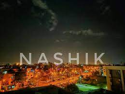
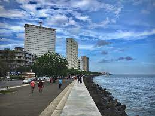
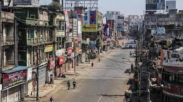
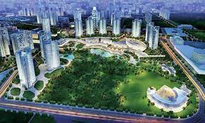

Names of cities in Maharashtra
- Nashik
- Mumbai
- Nagpur
- Pune
- Delhi
Information of Cities

- Nashik
-
Nashik is an ancient city and the largest city in the northern region of the Indian state of Maharashtra. ]
Situated on the banks of river Godavari, Nashik is the fourth largest city in Maharashtra, after Mumbai, Pune and Nagpur.
Nashik is well known for being one of the Hindu pilgrimage sites of the Kumbh Mela, which is held every 12 years.[7][8]
Nashik is located about 190 km north of state capital Mumbai.
The city is called the "Wine Capital of India" as more than half of India's vineyards and wineries are located here.
Around 90% of all wine produced in India comes from the Nashik Valley.[1][9].
Nashik is one of the fastest growing cities in India.
It has been a major industrial center in automobile hub.
The city houses companies like :
- Atlas Copco
- Robert Bosch GmbH
- CEAT Limited
- Crompton Greaves
- Graphite India
- ThyssenKrupp
Climate in Nashik
| January |
February |
March |
April |
May |
June |
July |
August |
September |
October |
November |
December |
| 32.4 |
34.1 |
40.6. |
47.4 |
41.4 |
16.2.4 |
47.4 |
31.4 |
34.8 |
41.2 |
50.56 |
47.4 |

- Mumbai
-
Mumbai also known as Bombay /bɒmˈbeɪ/, the official name until 1995) is the capital city of the Indian state of Maharashtra.
According to the United Nations, as of 2018, Mumbai is the second-most populous city in the country after Delhi and the seventh-most populous city in the world with a population of roughly 20 million.
As per Indian government population census of 2011, Mumbai was the most populous city in India with an estimated city proper population of 12.5 million living under Municipal Corporation of Greater Mumbai.
Mumbai is the centre of the Mumbai Metropolitan Region, the sixth most populous metropolitan area in the world with a population of over 23 million.
Mumbai lies on the Konkan coast on the west coast of India and has a deep natural harbour.
In 2008, Mumbai was named an alpha world city.It has the highest number of millionaires and billionaires among all cities in India.
Mumbai is home to three UNESCO World Heritage Sites: the Elephanta Caves, Chhatrapati Shivaji Maharaj Terminus, and the city's distinctive ensemble of Victorian and Art Deco buildings.
This is a list of all stations of the Mumbai Metro, a rapid transit system serving Mumbai in the Mumbai Metropolitan Region of India
- Aarey colony
- Acharaya Atrey chowk
- Airport Road
- Andheri
Climate in Mumbai
| January |
February |
March |
April |
May |
June |
July |
August |
September |
October |
November |
December |
| 50.4 |
43.1 |
43.8. |
32.6 |
40.4 |
21.24 |
43.5 |
31.4 |
34.8 |
40.00 |
29.40 |
21.00 |

Nagpur
Nagpur is the third largest city and the winter capital of the Indian state of Maharashtra
.[17] It is the 13th largest city in India by population[18] and according to an Oxford's Economics report, Nagpur is projected to be the fifth fastest growing city in the world from 2019 to 2035 with an average growth of 8.41%.[19] It has been proposed as one of the Smart Cities in Maharashtra and is one of the top ten cities in India in Smart City Project execution.[20][21][22]
Nagpur is the seat of the annual winter session of the Maharashtra state assembly.
It is a major commercial and political center of the Vidarbha region of Maharashtra.
In addition, the city derives unique importance from being an important location for the Dalit Buddhist movement and the headquarters for the Hindu nationalist organization RSS.
Nagpur is also known for the Deekshabhoomi, which is graded an A-class tourism and pilgrimage site, the largest hollow stupa among all the Buddhist stupas in the world.
The regional branch of Bombay High Court is also situated within the city.
Climate in Nagpur
| January |
February |
March |
April |
May |
June |
July |
August |
September |
October |
November |
December |
| 32.4 |
34.1 |
40.6. |
47.4 |
41.4 |
16.2.4 |
47.4 |
31.4 |
34.8 |
41.2 |
50.56 |
47.4 |

Pune
Pune, known as Poona until 1978[17] (Marathi: [puɳe] (About this soundlisten); English: /ˈpuːnə/),[18][19][20][21][22] is the second largest city in the state of Maharashtra and the 7th most populous city in India,
with an estimated population of 7.4 million as of 2020.[23] It has been ranked as "the most livable city in India" several times.[24] Along with the municipal corporation limits of PCMC and the three cantonment towns of Camp, Khadki and Dehu Road, Pune forms the urban core of the eponymous Pune Metropolitan Region (PMR).[25]
According to the 2011 census the urban area had a combined population of 5.05 million whilst the population of the metropolitan region was estimated at 7.4 million.
Situated 560 metres (1,837 feet) above sea level on the Deccan plateau on the right bank of the Mutha river,[26]
Pune is also the administrative headquarters of its namesake district.
Climate in Pune
| January |
February |
March |
April |
May |
June |
July |
August |
September |
October |
November |
December |
| 45.4 |
23.9.1 |
40.6. |
32.4 |
31.4 |
20.2 |
45.4 |
31.4 |
38.8 |
40.2 |
20.5 |
27.4 |
 Delhi
Delhi is officially the National Capital Territory (NCT) of Delhi, is a city and a union territory of India containing New Delhi, the capital of India.It is bordered by the state of Haryana on three sides and by Uttar Pradesh to the east. The NCT covers an area of 1,484 square kilometres .According to the 2011 census, Delhi's city proper population was over 11 million,the second-highest in India after Mumbai,[18] while the whole NCT's population was about 16.8 million.[7] Delhi's urban area is now considered to extend beyond the NCT boundaries,\
and include the neighbouring satellite cities of Ghaziabad, Faridabad, Gurgaon and Noida in an area called the National Capital Region (NCR) and had an estimated 2016 population of over 26 million people, making it the world's second-largest urban area according to the United Nations.
Recent estimates of the metro economy of its urban area have ranked Delhi either the most or second-most productive metro area of India.
Delhi is the second-wealthiest city in India after Mumbai and is home to 18 billionaires and 23,000 millionaires.
Delhi ranks fifth among the Indian states and union territories in human development index.
Delhi has the second-highest GDP per capita in India.
Delhi is of great historical significance as an important commercial, transport, and cultural hub, as well as the political centre of India.
Delhi
Delhi is officially the National Capital Territory (NCT) of Delhi, is a city and a union territory of India containing New Delhi, the capital of India.It is bordered by the state of Haryana on three sides and by Uttar Pradesh to the east. The NCT covers an area of 1,484 square kilometres .According to the 2011 census, Delhi's city proper population was over 11 million,the second-highest in India after Mumbai,[18] while the whole NCT's population was about 16.8 million.[7] Delhi's urban area is now considered to extend beyond the NCT boundaries,\
and include the neighbouring satellite cities of Ghaziabad, Faridabad, Gurgaon and Noida in an area called the National Capital Region (NCR) and had an estimated 2016 population of over 26 million people, making it the world's second-largest urban area according to the United Nations.
Recent estimates of the metro economy of its urban area have ranked Delhi either the most or second-most productive metro area of India.
Delhi is the second-wealthiest city in India after Mumbai and is home to 18 billionaires and 23,000 millionaires.
Delhi ranks fifth among the Indian states and union territories in human development index.
Delhi has the second-highest GDP per capita in India.
Delhi is of great historical significance as an important commercial, transport, and cultural hub, as well as the political centre of India.
Climate in Delhi
| January |
February |
March |
April |
May |
June |
July |
August |
September |
October |
November |
December |
| 34.4 |
34.1 |
10.6. |
47.4 |
41.4 |
42.2.4 |
12.4 |
15.4 |
18.8 |
20.2 |
40.56 |
27.4 |